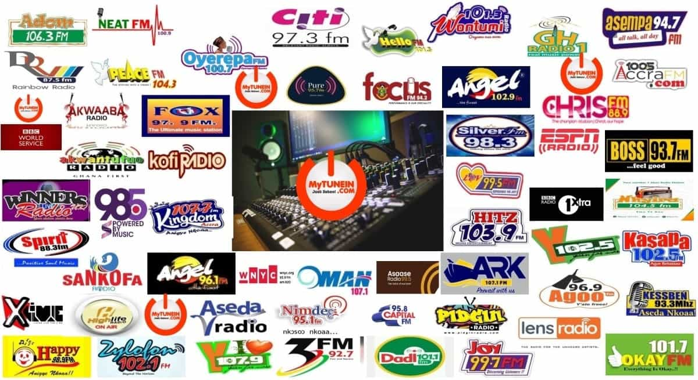

In terms of sports and online or really any digital interaction, the radio has been around for the longest. Older citizens still rely on it rather than newer streaming services as well. While the radio is now most common in cars or non-stationary motives of transportation, it has stood as a reliable source for following sports around the world for hundreds of years.
